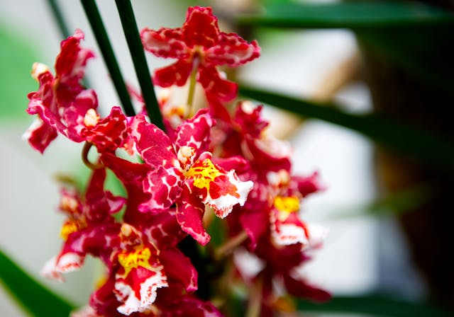

Aprendendo mais sobre a Família Botânica Orquídea
A proposta desse artigo, é induzir a curiosidade do leitor a respeito dessa flor tão aclamada.
É impressionante a variedade que compõe a família das orquídeas. São cerca de 50 mil espécies ao redor do mundo, 20 mil encontradas na natureza e 30 mil resultantes de cruzamentos em laboratório, e o Brasil é um dos países com a maior variedade de orquídeas: aproximadamente 3500 espécies podem ser encontradas por aqui.
E como escolher uma espécie entre tantas para começar um orquidário? Conhecendo um pouco de cada uma (das mais comuns, claro, afinal 50 mil é muita coisa!) Assim fica mais fácil identificar a que mais combina com suas expectativas e com seus hábitos.
